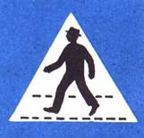
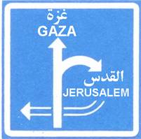

شاخصات (إشارات) الاستعلامات
ج-1
موقف للمركبات ، وإذا ذُكر نوع من المركبات في اللافتة التي تحت الشاخصة فيكون الموقف للمركبات المذكورة فقط .
ج-4
طريق بدون مخرج
ج-5
لك حق الأولوية في الطريق الضيقة بالنسبة لحركة السير من الاتجاه المعاكس
ج-6

الدخول إلى مقطع طريق فيها حركة السير باتجاه السهم فقط (طريق ذات اتجاه واحد) وحتى المفترق القريب أو لغاية الشاخصة أ-38
ج-6 أ
حركة السير باتجاه السهم الأبيض مسموحة لجميع المركبات ، أما المركبات التي سُمح له بالسير بموجب الشاخصة ب-35 فيجوز لها السير في الاتجاه المعاكس .
ج-7
مكان عبور المشاة
ج-28
لافتة إرشاد قبل المفترق : تُظهر شكل المفترق . سهم عريض : طريق رئيسية - سهم رفيع : طريق ثانوية .
ج-29
لافتة إرشاد قبل محول في طريق سريعة .
ج-38
مكان وقوف لمركبة معاق - مشلول الأرجل
ج-39
عدد المسالك في الشارع آخذ في التزايد
ج-40

عدد المسالك في الشارع آخذ في التناقص
ج-44
يجوز الوقوف على الرصيف كما هو موسوم في الشاخصة، وذلك للمركبات الخصوصية والخصوصية المزدوجة الاستعمال والمركبات التجارية التي لا يزيد وزنها الإجمالي المسموح به عن 2200كغم
ج-45
شارع مختلط
ج-46
نهاية الشارع المختلط